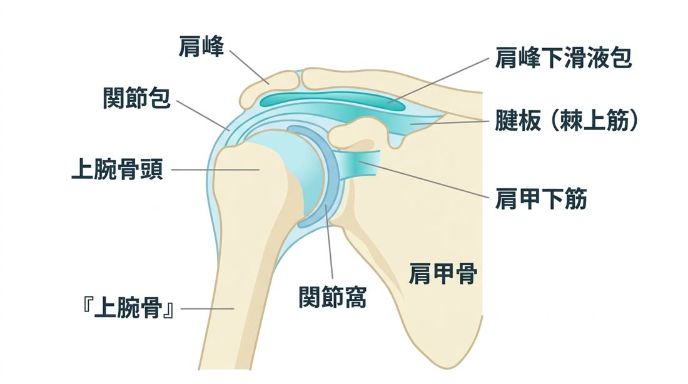
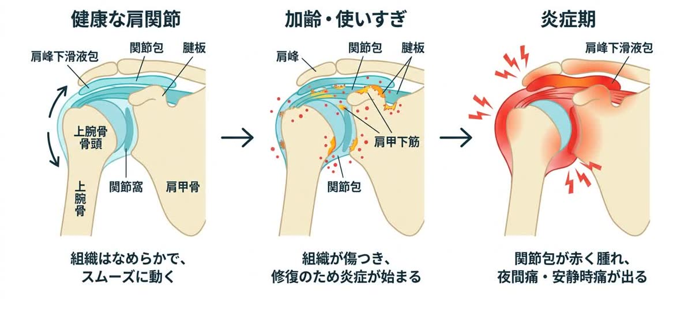
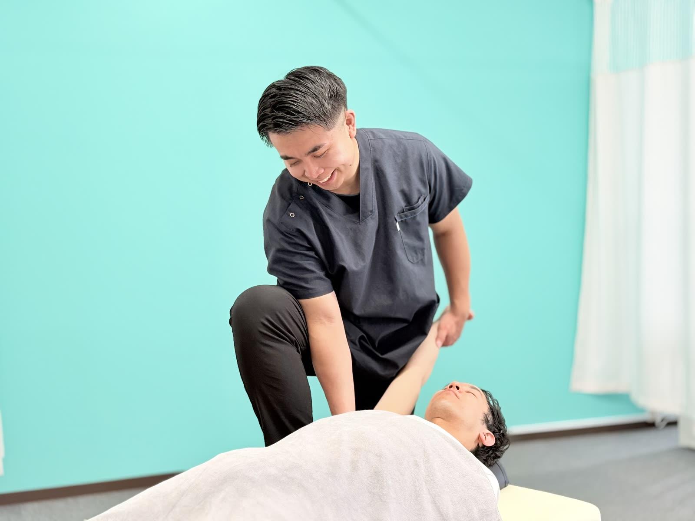

ある日突然、腕が上がらなくなった。夜、肩の痛みで目が覚める——。それは「ただの肩こり」ではなく、肩関節の内部で炎症が起きているサインかもしれません。
ひとつでも当てはまる方は、このまま読み進めてください。四十肩・五十肩は、今あなたがどの「時期」にいるかで、やるべきことが正反対になる——という特徴を持った、少し厄介な症状です。
四十肩・五十肩は俗称で、医学的には 「肩関節周囲炎（けんかんせつしゅういえん）」 と呼ばれます。40〜60代に多く発症し、名前のとおり肩関節の周囲の組織に炎症が起きた状態です。
肩関節は、上腕骨の丸い先端（骨頭）が、肩甲骨の浅いお皿（関節窩）にはまり込んでできています。人体で最も広い範囲を動かせる、とても自由度の高い関節ですが、その分だけ構造は複雑でデリケート。この関節を安定させているのが、袋状に包む 関節包（かんせつほう）、その内側で骨頭を支える 腱板（けんばん＝棘上筋・棘下筋・小円筋・肩甲下筋という4つのインナーマッスルの腱）、そして骨と腱の間でクッションになる 滑液包（かつえきほう） です。四十肩・五十肩は、これらの組織に炎症・損傷が起きて痛みと動きの制限を引き起こします。

発症のきっかけは、加齢による組織の変化に、使いすぎ（オーバーユース）や、長年の猫背・巻き肩による肩関節への負担が積み重なること。関節包や腱板に生じた小さな傷を修復しようと血液が集まり、その過程で炎症が起こります。いわば、関節の奥で小さな“火事”が起きているような状態です。

四十肩・五十肩は、時間の経過とともに 炎症期 → 拘縮期 → 回復期 という3つの段階をたどります。それぞれで身体の中の状態も、正しい対処法もまったく異なります。まずは、ご自身が今どの時期にいるかを確認してみてください。
関節包や腱板の傷を治そうと血液が集中し、炎症が最も激しい時期。関節の奥で火事が燃えている状態です。
激しい痛みは少しずつ引いてきますが、傷が治る過程で関節包が分厚く硬くなり、周囲と癒着します。関節が凍りついたように固まる、これが「拘縮（こうしゅく）」です。
硬くなった組織に柔軟性が戻り、血の巡りも改善して、少しずつ動かせる範囲が広がっていきます。
四十肩・五十肩は「そのうち自然に治る」と言われがちです。確かに痛みは時間とともに軽くなることが多いのですが、自己判断で放置すると、次のような“負の連鎖”に陥ることがあります。
正しいケアをしないと炎症が長引き、数ヶ月〜半年以上も、夜眠れないほどの痛みに耐え続けることになります。睡眠不足は心身への大きなストレスになります。
動かさない期間が長すぎると癒着が強固になり、肩が石のようにガチガチに固まってしまいます。こうなると、少しの施術では動きが戻りにくくなります。
自然治癒だけに任せると回復に2〜3年かかることもあり、痛みが消えた後も「腕が耳まで上がらない」「背中に手が回らない」といった動きの制限が残ってしまうことがあります。
四十肩・五十肩は、施術を始めるのが早いほど、回復もスムーズです。炎症期のうちから正しく炎症を抑え、拘縮期には固まる前に適切に動かしていく——この“時期に合った対応”を積み重ねることで、つらい期間そのものを短くできます。
「歳のせいだから」「そのうち治るから」と我慢を続けるほど、回復への道のりは遠くなります。肩に違和感を覚えた、その時がベストタイミングです。痛みのない、自由に動く毎日を一緒に取り戻しましょう。
当院では、まず「今どの時期か」を正確に見極めることから始めます。そのうえで、時期に合わせた施術を段階的に行い、「今のつらさ」への対応から、「動く肩」への回復、そして再発予防までを一貫してサポートします。
いつから、どの動きで、どのくらい痛むのか。夜間痛の有無や、腕がどこまで上がるか（可動域）を丁寧に検査し、炎症期・拘縮期・回復期のどの段階かを正確に判断します。肩に負担をかけてきた猫背・巻き肩などの姿勢もあわせてチェックし、状態と施術方針をわかりやすくご説明します。

強い痛みや夜間痛のある炎症期は、無理に動かすと逆効果。この時期はハイボルテージ（高電圧の電気）や超音波などの物理療法を用いて、関節の奥で起きている炎症と痛みを抑えることを最優先します。日常生活での肩の使い方・寝るときの楽な姿勢もアドバイスし、炎症の“火消し”をサポートします。
痛みが落ち着いてきたら、いよいよ拘縮（固まり）へのアプローチです。硬くなった肩甲骨まわりの筋肉をゆるめて肩甲骨の動きを取り戻し、肩関節まわりの縮こまった組織を、痛みのない範囲でていねいにストレッチ・可動域訓練していきます。肩甲骨はがしも組み合わせ、「動く肩」へと戻していきます。

四十肩・五十肩は、時期を間違えたセルフケアがかえって悪化を招くことがあります。炎症期にやってはいけないストレッチ、拘縮期にやるべき体操——今のあなたの時期に合った正しいケアを、ご自宅用にお伝えします。あわせて、肩に負担をかけ続けてきた猫背・巻き肩を整え、反対側の肩の発症や再発を予防します。
自然に痛みが引くこともありますが、放置した場合は回復までに2〜3年かかることも珍しくなく、痛みが消えても「腕が耳まで上がらない」「背中に手が回らない」といった可動域制限が残ることがあります。時期に合わせた施術で、回復期間の短縮と可動域の回復を目指すことをおすすめします。
時期によって正解が真逆になります。炎症期に無理に動かすと悪化し、拘縮期は動かさないと固まります。今どの時期かの見極めが最も重要ですので、自己判断の前に一度ご相談ください。
肩こりは筋肉の疲労・緊張、四十肩・五十肩は関節包や腱板の炎症（肩関節周囲炎）です。「腕を上げる・後ろに回すと痛い」「安静時もズキズキ」「夜中に痛みで目が覚める」場合は四十肩・五十肩の可能性が高いです。
症状の時期や重さによって異なります。炎症期は短い間隔での来院、拘縮期以降は計画的なリハビリを行います。初回の検査で今の時期を見極め、あなた専用の通院プランをご提案します。